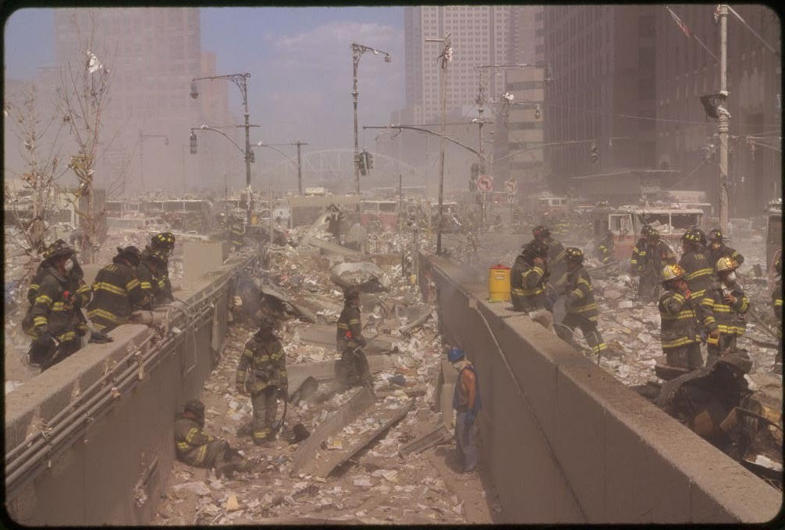
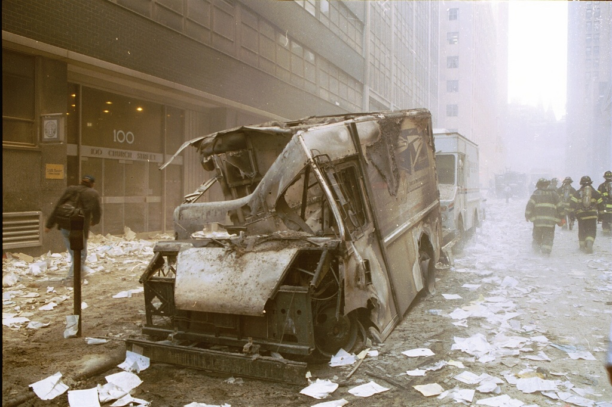
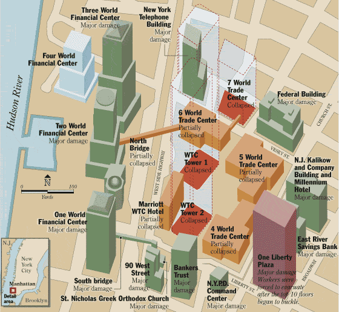
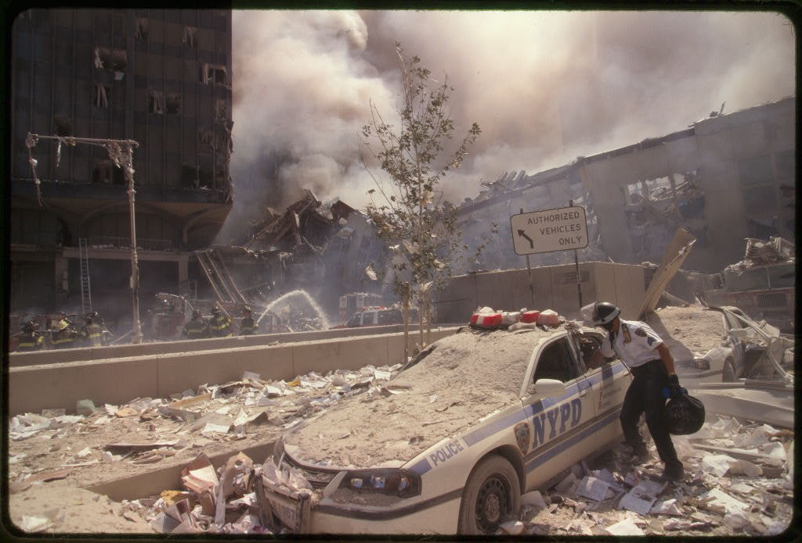
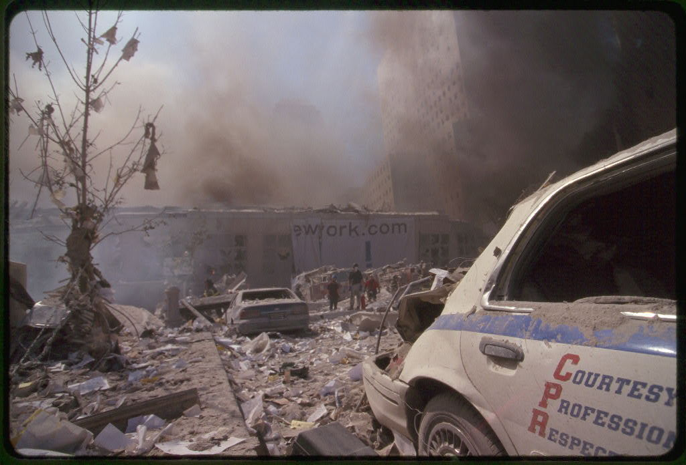
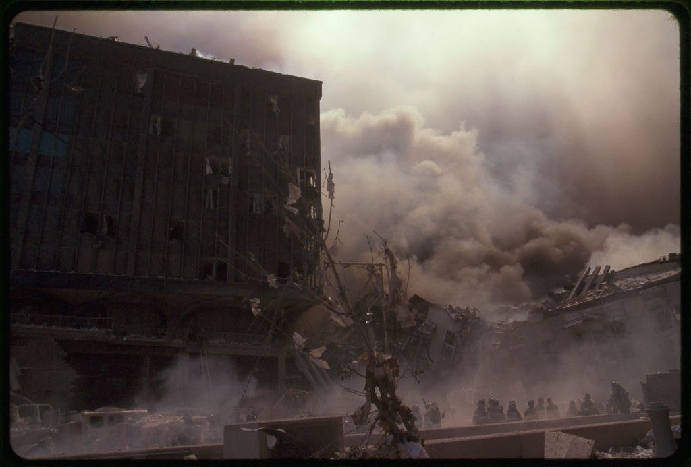
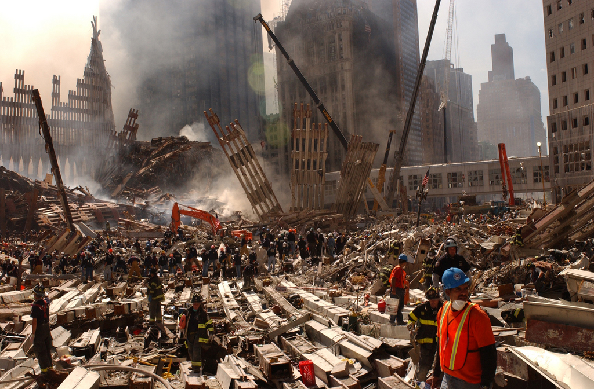

| Bottom | homepage |
|
Billiard Balls | Why Indeed |
|
|
Molecular Dissociation: from Dust to Dirt
(Fuzzyblobs, Fuzzballs, and Venting)
By
Judy Wood
This page last updated, May 25, 2007
This page is currently UNDER CONSTRUCTION
and is currently being updated.
[Note: References and Sources will be posted and figure numbers will be corrected (in sequential order) when this paper is finished .]
(originally posted: May 16, 2007)
|
Shortcuts
|
Audio Files
|
|
| VI. Fuzzyblobs VII. Tree Leaves VIII. Venting · Fuming into nanohaze IX. Fuzzballs X. Nano-dust · Scrubbing the Streets |
|
 |
| Figure 47. "The slot." This looks like a "slot" is down the middle of West Street which is probably a ramp to an underground parking garage. There are several "fuzzyblobs" of blue-gray haze which appears to be a harmful material. An firefighter near the right side of the photo is holding his nose, showing us that he senses and unusual odor. The fuzzyblob behind the yellow cooler drapes down over the concrete wall. The firefighter rubs his eyes while leaning on the wall, just in front of the cooler. Another firefighter runs toward the cooler (or away from what is behind him) with urgency. There is a firefighter slumped over, down on the left side of the slot and he doesn't look very good. The firefighter closest to him looks concerned as he approaches. Just behind the concerned firefighter is another fuzzyblob. What is this material? A fellow wearing a blue hard hat (and sleeveless shirt) stands down on the right side of the slot and looks over at the slumped-over firefighter with concern. Nothing about this scene is familiar to these firefighters. That is, a lot of strange things are happening, here. And why are the trees missing their leaves? This photo appears to have been taken after both towers were destroyed, based on the sunlight. But this may have been taken just after WTC1 was destroyed (which was after WTC2 was destroyed). (9/11/01) Source |
 |
| Figure 48. This is a view south from the intersection of Barclay and West Broadway. WTC7 is to the right and WTC5 is the burning building on the left at the end of the street. The Postal Building is on the left. The Postal truck on the left side of the street nearest the camera appears fairly "eaten up" on its left side, while the Postal truck on the right side of the street appears to be undamaged. The Postal truck on the left has a fuzzy blob under its left rear bumper. (It looks like a scene from a Sci-fi movie where some shape-shifting alien has turned into a cloud and is attacking the Postal truck.) (9/11/01) Source |
 |
|
Figure 48(a). A toasted mail truck faces westward, parked behind the Postal building on Barclay Street. City Hall Park can be seen in the distance, across Church street. This damage does not appear to have been caused by a "normal" fire. There is no obvious sign of burned paper. The appearance of the back wheel area of the mail truck looks as if something radiated outward from the wheel. It is very unlikely this mail truck was hit by debris, unless this debris did not follow the laws of physics and made several right-angle turns along its path to the mail truck. Curiously, the mail truck parked behind it looks OK.
(9/11/01) Source: |
 |
| Figure 48(b). Identification of building location (mouse over for building names) (9/11/01) Source: |
 |
 |
| Figure 48(c). Satellite Photo. The postal truck would be parked behind the Postal building, on the far side of Barclay Street and facing left. The Postal building is directly across the street from WTC5. The roof of the Postal Building appears white in the above photo. That mail truck was fairly well protected by being in the middle of a deep NYC "canyon" between tall buildings. (mouse over for building names) (9/11/01) Source: |
Figure 48(d). Google Map with street names and one-way notations. This map appears to reflect the situation after 9/11/01 as it shows Vesey Street closed off. But, Barclay Street is indeed a one-way street, with traffic moving westward. (Note that the red "B" marker is on Park and is just one block north of where the mail truck was toasted.)
(The "B" marker shows where "landing gear and tire" were found. It too made a right angle turn to drop down into the canyon without hitting any of the buildings.) (9/?/02?) Source: Google maps |
 |
| Figure 49. "fuming cars" on Vesey Street (9/11/01) Source |
| Figure 50(a). PLACE-HOLDER for "fuming cars" from somewhere else (9/11/01) Source |
|
| Figure 50(c). WTC1 has just been destroyed and the ground-level dust clouds have somewhat cleared the area north (to the left) of the WTC complex. Black smoke can be seen rising from the car lot. Whitish and faint dust clouds can be seen rising from Barclay Street, just behind WTC7. Stronger dust clouds are rising from in front of WTC7 (to the right) along Vesey Street and streets east of the WTC complex. (9/11/01 entered) Source |
|
| Figure 50(b). PLACE-HOLDER for "fuming cars" from somewhere else (9/11/01) Source |

{kind=link}
Note the many leaves on this tree.
| Figure 52. (9/11/01) Source |
 |
 |
| Figure 53. Note the light pole that looks discolored. (9/11/01) Source |
Figure 54. The discolored light pole on the left side of the previous photo can be seen between the fireman in the foreground and the pole he's holding. The top of that light pole is just to the left of his hat. (9/11/01) Source |
 |
 |
| Figure 55. The car parked to the right of the tree appears to be the same car to the right of the tree in the previous figure. However, that tree appears to have fewer leaves. (9/11/01) Source |
Figure 56. It is not clear which tree this is. But, it is not doing well. (9/11/01) Source |
 |
 |
| Figure 57. (9/13/01 entered, likely from 9/12/01) Source |
Figure 58. Another, 9/16/01 (9/16/01 entered) Source |
 |
 |
| Figure 59. Early fuming. WTC1. Where did the building go? (9/12?/01) Source |
Figure 60. WTC3. Where did the building go? (9/15/01 entered) Source |
 |
| Figure 61. No longer "venting," the pile is now just "fuming." Most of WTC3 disappeared during the destruction of WTC1. The pedestrian walkway over the West Side Highway was connected to something that is no longer there. The remains of WTC2 can be seen near the center of the photo and the remains of WTC1 are partly visible in the lower right corner. (9/27/01 entered) Source |
| Figure 62. The toasted lot burns. Curiously, it's upwind from the WTC. (9/11/01) (9/11/01) Source |
|
Figure 63. "Fuming" from the cars can be seen up West Street north of the WTC complex. The toasted lot is in front of the building to the right.
(9/11/01) Source |
Figure 64. It appears that there are no cars on fire at the right side of the car lot. What was fuming in the previous photo? (Figure 53) (9/11/01) Source |
| Figure 65. Nice example of "fuzzballs." (9/11/01) Source Tricia Meadows/Globe Photos |
Figure 66. (9/11/01) Source |
 |
|
| Figure 67. Whoops! I guess that's molten metal under the sidewalks? ;-) (9/11/01) Source |
Figure 68. And molten metal under the streets? (9/11/01) Source |
{kind=link}
 |
|
| Figure 69. (9/11/01) Source |
Figure 69(a). And molten metal under the streets? (9/11/01) Source: AP |
Let's talk about this.
| Figure 70. (9/11/01) Source |
| Figure 71. (9/11/01) Source |
Figure 72. (9/11/01) Source |
| Figure 73. Fuzzballs (9/11/01) Source |
Figure 74. Fuming (9/11/01) Source |
| Figure 74b. Coming out of hiding, these people look amazed. From the postures, these folks look amazed. They are probably wondering if they are asleep and dreaming. After all, there should be a 110-story building directly in front of them. Where did it go? They are looking across the Vesey Street intersection at the remains of WTC6. In the distance, on the far side of the intersection, a fellow stands in amazement, with his hands on his hips. These people are approximatey 200 to 300 feet from where the 1,368-foot north wall of WTC1 stood. There appear to be no obvious indications that a 110-story building, over a quarter mile tall, had been there earlier in the day. Except for a few pieces of aluminum cladding strewn to the side, some paper and dust are all that remain. (9/11/01) Source |
| Figure 75. There does not seem to be a very wide distribution of dust size. (9/11/01) Source |
Figure 76. (9/11-12/01) Source |
| Figure 77. Cleaning streets begin on the afternoon of 9/11/01? This photo looks like it was taking in the early morning of 9/12/01. Why was street cleaning more important than survivor rescuing? After all, the street cleaners would be blocking the thoroughfare. (9/12?/01) Source |
Figure 78. West Street looks pretty clean! (9/14/01 entered) Source |
It seems that all of the meticulous and frequent street scrubbing was to get rid of the "fuzzballs" and "nanodust."
 |
|
| Figure 79. Lower Manhattan was not the only recipient of a hose job. (9/16?/01 entered) Source |
Figure 80. New York City makes a clean sweep of it. (10/03/01 entered) Source |
{kind=link}
Streets and sidewalks can be scrubbed. Lawns cannot. Perhaps this explains why they appear to have dumped fresh dirt on top of the dust in the "front yard" of WFC2. They can't very well scrub the lawns like they scrubbed the streets and sidewalks, so perhaps they smother the fuming lawn with dirt.
 |
| Figure 81. Check out this new load of dirt! It looks like potting soil. What possible explanations you can think of? Landscaping? (9/16/01 entered) Source |
|
Continue to next page.
|
Continue to next page.
| Jump to Figure 50(c) Jump to Figure 64 Jump to Figure 70 Jump to Figure 74b |
| Top | homepage |
|
Billiard Balls | Why Indeed |
|
|
|